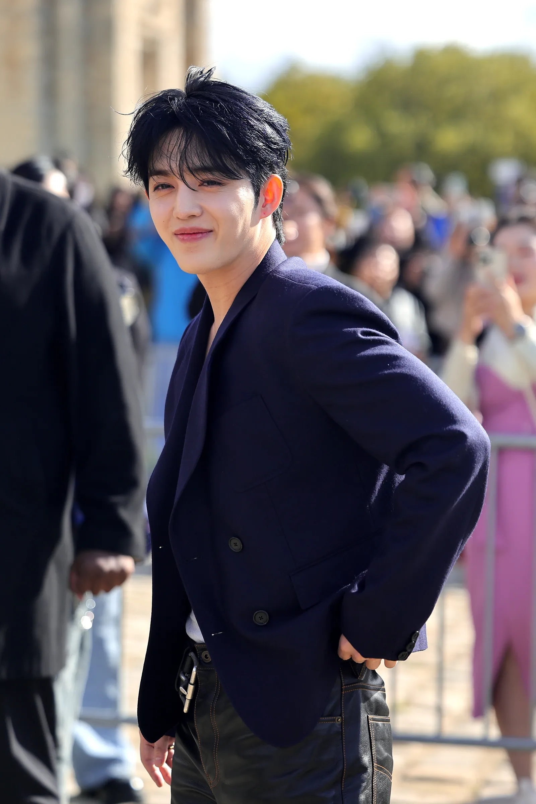

About S.Coups
Choi Seungcheol, better known as S.Coups, is the leader of the global K-pop group SEVENTEEN. S.coups has led the 13-member group (divided into 3 sub-units) with support, discipline, and unity since their debut in 2015. S.Coups inspires both his team and fans through his humility and dedication.
S.Coups would make an excellent president as he has the qualities and background to become a strong president. A president that listens, communicates, and uplifts others. With his background to manage and motivage a large diverse group, shows his abiity to bring people together and lead a country.
Learn more about him on his Wikipedia page.
Campaign Platform
S.Coups campaign focuses on encouraging mental health, teamwork and equality. He believes that everyone deserves to be heard, and guides with care. Much like how he creates a collaborative and supportive environement like SEVENTEEN, he wishes to also bring growth, creativity and kindness to his nation.